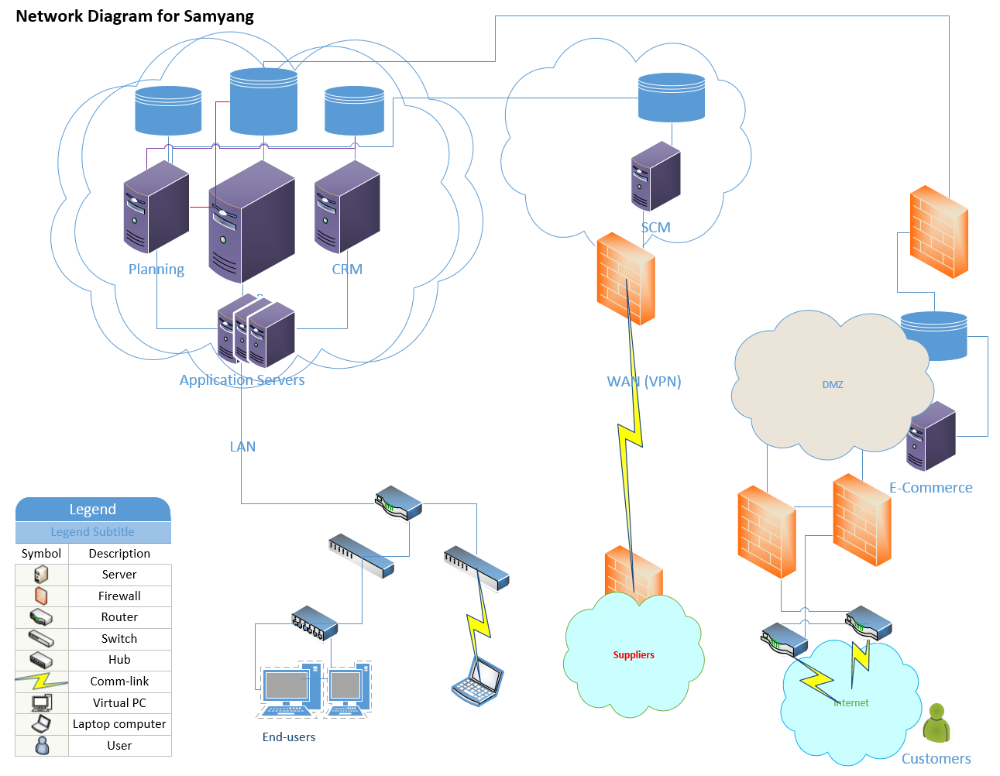

Computer Network Upgrade Proposal for Samyang
Dong Myeong Seo
Table of Contents
1.2 Summary of benefit using Distributed Network. 5
2 Distributed Network Requirements Analysis. 6
2.1 Functionality (Capacity, and Performance Requirement) 6
2.1.1 Planning (via Hyperion). 6
2.1.2 SCM (Supply Chain Management). 6
2.1.3 ERP (Enterprise Resource Planning). 6
2.1.4 CRM (Customer Relationship Management). 7
2.1.5 Oracle’s e-Commerce. 7
2.2 Connectivity and Security Requirements. 7
2.2.1 Planning (via Hyperion). 7
2.2.2 SCM (Supply Chain Management). 8
2.2.3 ERP (Enterprise Resource Planning). 8
2.2.4 CRM (Customer Relationship Management). 8
2.2.5 Oracle’s e-Commerce. 8
3 Communication Protocols Analysis and Recommendations. 10
3.1 Analysis – What is happening?. 10
3.2 To-Be Recommendation – where to go?. 11
4 Network Traffic Analysis and Recommendations. 14
4.1 Network Traffic Analysis per Usage. 14
4.1.1 Data Mining for planning solution. 14
4.1.2 HTML client for ERP. 15
4.1.3 WWW for CRM and SCM. 16
4.2 Recommendation for each usage – congestion control methodology. 16
5 Network Design and Architecture. 19
5.1 Enterprise-wise topology. 19
5.2 Software-Defined Network (SDN) 19
5.3 Infrastructure and Software Requirements. 20
5.4 Infrastructure and Software Cost Analysis. 21
6 Future Needs Analysis and Recommendations. 23
6.1 Emerging Technology in Distributed Networking. 23
6.2 3 Potential Changes to Come. 24
6.3 Future Network Consideration for Samyang. 26
6.4 Summary. 27
Samyang, a sugar manufacturer in Korea, has more than 70 years of history with over 5,000 employees worldwide. The business parties comprise,
Likewise, other traditional manufacturing companies, to minimize the inventory and to maximize the customer satisfaction, this business requires the streamlined business interfaces through,
Since this upgrade proposal encompasses the server virtualization, the distributed network upgrade is in due course.
A computer network is an essential technology for a distributed system for the business applications, the home applications, and the mobile users (Tanenbaum & Wetherall, 2010). In other words, the distributed systems are constructed on top of a computer network. Hence, the integration of multiple Enterprise Solutions is more or less same with the distributed process which can be successful on the distributed network.
Commonly, the aspect of distributed architecture comprises the expandability (multi-site, multiple system types, multi-channel), scalability (both network & site capacity), and reliability (multiple levels of redundancy) and resilience (Roy & Emmett, 2011). These distributed computing systems comprise computers, networks, and operating systems and application software. Though the networks are components in distributed environments, the same aspect repeats for the benefit of distributed networking. So the network is able to provide for the future network topology (flexibility), is capable of scaling and expanding (growth, scalability), and is to respond automatically to failures and sustain network traffic (high-availability, reliability) (D-Link, 2007).
This upgrade encompasses hardware upgrade, enterprise solutions upgrade, and migrating to the virtual environment to meet the industry requirement which changes rapidly. Here we review the usage of each Enterprise Solutions, capacity, and performance requirement.
This system collects all data in the various database system to analyze it in the virtualized environment. This application makes use of high performance in I/O though the number of users to access this application is less than 10.
This layer requires the communication between Samyang and the chain of suppliers. Samyang post the plan and forecast which resulted in the supply and demand. Two main requirements for this application is scalability and security rather than the speed of network by putting the requirement planning data into the area where all members in SCM can access.
This layer supports multiple communication with multiple logic and application servers. The HTML client requests a certain computation through Java Application Server (JAS), then JAS through a Logic server which accesses the database server to manipulate it. This layer enables the communication between multiple supplier's systems through Business Service (BSSV) and allows the mobile interface through the smartphones using Application Integration Services (AIS) server. Almost all the employees scattered globe are to access this application to hold the daily transactions. Hence, availability and security are the main requirements for this enterprise application.
Internal application layer to maintain and support all sales matters within the organization. This layer integrates with the ERP solution directly with limited access using higher security through the application layer.
The customer accesses the end goods to purchase through the Internet. And this system interfaces with the ERP system. The layer requires higher availability, security, and speed through load distribution, flexible routing, WebSocket connection. For higher performance, Secure Socket Layer/Transport Layer Security (SSL/TLS) offloading, content caching, and HTTP compression can be used (Oracle, 2017).
Samyang can consider implementing software-based networking (SDN) to minimize the overhead in maintaining multiple servers. On the other hand, it is worthy of study on Network functions virtualization (NFV). According to the vendor, it has benefits like rapid development of software in comparison to protocol standardization and development, simplification of network maintenance due to centralized control, and ability to swiftly deploy, relocate and upgrade new features (Gittik, 2014).
The availability and speed are the main concern for this solution. So for a network topology, a typical active-passive failover mode which requests via HTTP/S to connect the virtual IP which accesses the pool of database servers (Oracle, 2017). To have the maximum I/O performance Samyang can consider Sun Storage 16 Gb Fibre Channel PCIe Universal Host Bus Adapter (HBA), QLogic for its hardware.
Possibly, DeMilitarized Zone (DMZ) can be considered using a four-port Ethernet card in the firewall (Tech-FAQ, 2016). And to tackle possible vulnerability, suggesting Software Defined Networking (SDN) which has some tangible benefits like, more granular security, lower operating costs, and guaranteed content delivery (Ingrammicro, n.d.).
The ERP system is the backbone system for Samyang which holds daily transactions, so higher availability and security are the focal point for this software. Currently, ERP software Oracle’s JD Edwards EnterpriseOne is the Internet Application in distributed system which has link among HTML or Mobile client, JAS (Java Application Server), Logic Server, and Database Server which are all virtually connected with each other and communicate using socket call. Both (V)LAN ((Virtual) Local Network Network) and Virtual Private Network (VPN) are current way to communicate with each other, which is secured network. Desired protocol will be TCP/IP.
The users for CRM overlaps with the user of ERP system when both systems are integrated well. So one of concern here is network traffic to the user using the Internet. Another consideration is to maintain higher availability, the distributed data center, and replication can be reviewed.
This enterprise solution is open to the public, so Samyang has to focus on the network security. Possibly this system needs implementing some of security technology hashing for data integrity, encryption for privacy, firewalls, intrusion detection system for data integrity (Comer, 2015). Other network security methods for this system can be a reverse proxy (traceability), Secure Sockets Layer/Transport Layer Security (SSL/TLS)-enabled HTTP and TCP listener, Web Application Firewall (by defining the security rule), and HTTP Forward Proxy Support in Origin-Server Pools (Oracle, 2017).
The hype around cloud ERP is everywhere. Many IT professional claims that on-premise is dead. So far, Samyang was able to post daily transactions through on-premise ERP Oracle’s JD Edwards EnterpriseOne with lots of doubt on whether this solution gives them the best return on investment. In the modern computer world, it is hard for a single package to provide the user with full solutions varying unique practice. The integration of different software is arguably must-do-now.
The parties who claim on-premise is dead suggesting that through the cloud, you can transform your IT organization, you can focus on the core competencies, you can pay less, you can change your organization, and you can have world-class security (Kimberling & Bolon, 2017). Without a doubt, this due course of an upgrade for Samyang is timely.
As suggested in Unit 1, the success of the upgrade in the area of enterprise solutions, the operating systems, and the computer network for Samyang is highly dependent on how to configure each machine to communicate faster and more reliable because each enterprise solutions has a different audience which requires the different nature of the network.
The network protocols serve the functionalities to address data to the right recipient, physically to transmit data from source to destination with security protection, to receive the message and respond an acknowledgment (Mitchell, 2017). In the age of the Internet which is a form of statistical multiplexing, commonly the most of the protocol make use of the packet switching because which allows many-to-many communication (Comer, 2015). So next section will discuss further on the protocol suggestions for each communication channels.
As discussed earlier, the upgrade project covers the integration of different enterprise solutions, the planning, SCM, ERP, CRM, and e-Commerce which have different audience and communication requirement. Here we review the protocol recommendation through Table 2-1 where most of the protocols will be an open standard.
At the high level, the management of the computer networks is to be Software-Defined Networking (SDN) because this technology enables any system to connect any other system, Storage Area Network (SAN), or Local Area Network (LAN) at any site (Oracle, 2017). Regardless actual choice made by Samyang between the virtualized servers and the bare metal servers, the Fabric Virtualization can be used as a medium between servers and LAN/SAN.
According to IDC, the Fabric Virtualization/Interconnect uses a centralized device, often named an I/O director/gateway, which covers the physical I/O adapter (e.g., Ethernet or Fibre Channel) for multiple servers (Chen, 2013). Oracle claims that the Remote Direct Memory Access (RDMA)-enabled, 100 Gb network is used for this technology (Oracle, 2017).
Table 2-1
Communication Channel and the protocol recommendation
| Requirement | Protocol | Description |
|---|---|---|
| Planning Communication with multiple servers | UDP |
User Datagram Protocol.
The Internet Protocol Suite. UDP provides a way for applications to send encapsulated IP diagrams without having to establish a connection (Tanenbaum & Wetherall, 2011).
|
| SCM Supplier to DMZ server through the Internet | TCP |
Transmission Control Protocol.
TCP aims for a reliable end-to-end byte stream over an unreliable internetwork (Tanenbaum & Wetherall, 2011).
|
| ERP HTML client to JAS, JAS to Logic Server | HTTPS |
Secure Hypertext Transfer Protocol (HTTP) which is the application layer protocol. Here we focus on,
|
| CRM HTML client to CRM Server | VLANs |
Virtual Local Area Networks (LANs).
VLANs are based on VLAN-aware switches with the help of configuration tables in the bridge (Tanenbaum & Wetherall, 2011).
The concept of bridging has been incorporated into network devices (modems and wireless routers, etc.) which enable VLANs (Comer, 2015).
|
| e-Commerce Public user to e-Commerce Server | IP |
Internet Protocol.
The Internet Protocol of the network layer on the Internet.
IP specifies the format of packets sent across the Internet as well as the mechanisms used to forward packets from a computer through one or more routers to a final destination (Comer, 2015).
IP is designed to operate over all types of network hardware.
IP Options,
|
Note: In a real system, a single enterprise solution can have multiple protocols because the same application requires multiple servers. For instance, when running ERP software, the HTML client talks to the JAS, JAS to the Logic Server, and the Logic Server to the Database Server. So depending on the functionality or requirement, the protocol can be assigned. So this table is to demonstrate different protocol per OSI Reference Model, or TCP/IP Reference Model.
In summary, there can be many different protocols per layer whether we follow Open System Interconnection (OSI) Reference Model or TCP/IP Reference Model. Some are available for certain hardware or the operating systems others are tied to the specific the networking hardware or platform. Nonetheless, the goal of the distributed network is aiming at flexibility, scalability, reliability, and high-availability on top of quicker and safer network. In reviewing some industry trend, for some engineered system, the software and hardware conjunctions is connected to a virtualized, Remote Direct Memory Access (RDMA)-enabled, with 100 Gb network. And Software-defined networking (SDN) services allow any system to connect to other systems, SANs, or LANs at any site to have a fast, agile, and secure infrastructure (Oracle, 2017).
The usage of network for Samyang can be categorized followings: Data Mining for planning solution, HTML clients for the ERP solution, and the Internet usage for Customer Relationship and Supply Chain Management. Having different topology for these solutions, here we review current requirement and future extension by analyzing current requirement properly. Regardless the server virtualization, the communication channel for these solutions are important not to disrupt the daily business. As the business grows, the enterprise opts to provide its customer and supplier with bigger software and more data in addition to the natural growth of suppliers and customers. In turn, this can cause the network congestion as a due course. Hence, the proper network usage analysis is one goal to have sustainable enterprise for any organization with effective investment which includes both infrastructure and software.
Commonly computer networks comprise the network interface or Network Interface Card (NIC), hubs, switches, routers, media (cabling), and software. In this section, we may review some of this infrastructure and software to brief the algorithm in it not to have congestion or better performance. Based on both hardware and software configuration made, the network engineer is to perform the physical layer testing, reachability and connectivity, packet analysis, network discovery, device interrogation, event monitoring, performance monitoring, flow analysis, routing and traffic engineering, configuration, security enforcement, network planning (Comer, 2015).
Common ways to attempt to avoid network congestion are make it have enough capacity having proper analysis, design or make use of the routing less used, do not accept additional traffic when it is about to congested, feedback to the request to slow down, and shedding load (Tanenbaum & Wetherall, 2011). Table 3-1 below is a possible suggestion for Samyang per usage of the network to have streamlined business without investing huge amount.
Table 3-1
Congestion control methodology
| Network | Method | Description |
|---|---|---|
| Storage Networking Data Analysis | SDN |
Software-Defined Network.
Allows for more agile networks by abstracting the static architecture of conventional networks into a software-controlled layer (Oracle, 2017). Some literature represents it as Software-Managed Networks (SMN) because this concept is not simply meaning the virtualization of software hardware (Kassner, 2014). Hence, the purpose of SDN is to supply open interfaces which enable the development of software to control the connectivity supplied by a set of network resources and the flow of network traffic through them (Bailey, et al., 2014).
|
| Local Area Networking ERP | VLAN |
Virtual Local Area Network.
VLAN is a logical segmentation of network. VLANs is based on VLAN-aware switches with the help of configuration tables in the bridge (Tanenbaum & Wetherall, 2011). The concept of bridging has been incorporated into network devices (modems and wireless routers, etc.) which enable VLANs (Comer, 2015).
|
| WWW SCM & CRM | QoS |
Quality of Service
An industry-wide set of standards and mechanisms for ensuring high-quality performance for critical applications using Admission Control Service (ACS), Subnet Bandwidth Management (SBM), Traffic Control (TC), Packet Classifier, and Packet Scheduler (Microsoft, 2003). By determining, what applications need from the network, how to regulate the traffic that enters the network, how to reserve resources at routers to guarantee performance, and whether the network can safely accept more traffic (Tanenbaum & Wetherall, 2011).
|
Note: All methodology above is more related with software than the physical networking infrastructure. As multiple kinds of literature indicate, these can have the best performance with proper hardware configuration.
In summary, the growing usage of the network is faster than the development of the network hardware and software. So it is crucial to measure and implement some of emerging technology to have the best outcome per limited investment.
Figure 4.1 is high-level communication diagram for Samyang to have seamless communication among the enterprise solutions without compromising the security concern in the virtualized environment. The core part of this implementation is related with

Figure 4.1. Enterprise Wise Network Architecture
Above diagram is very high-level generic configurations and putting in the main communication channel. As a result, the Internet access from the end-users is not described here. The cloud here is assumed either the hosted services or bare metal configuration.
As discussed earlier, the whole purpose of this proposal is not to compromise the security vulnerability with proper network congestion control. A typical configuration for SDN is adding layer in between infrastructure layer and application layer to have better control on traffic. Figure 4.1 shows basic architecture of SDN.
Figure 4.1. Software-Defined Network
The benefit of above configuration is that it is programmable directly, agile, centrally managed, programmatically configured (Opennetworking, 2017).
For the successful migration from a traditional server-client system to the virtual environments, Samyang is to consider below factors,
Microsoft suggest the capacity as shown Table 4-1 below,
Table 4-1
Virtual machine role requirements
| Role | vCPU | Memory & Disk |
|---|---|---|
|
Network Controller (3) |
4 vCPUs |
8 Gb & 75 Gb |
|
SLB/MUX (3) |
8 vCPUs |
Software Load Balancing (SLB) & multiplexer (MUX) 8 Gb & 75 Gb |
|
RAS Gateway |
8 vCPUs |
Remote Access Services (RAS) 8 Gb & 75 Gb |
|
BGP router for SLB/MUX |
2 vCPUs |
Border Gateway Protocol (BGP) 2 Gb & 75 Gb |
Note: The hard disk memory is to be located in Operating System which to hold the Hypervisor (McIllece et al., 2017).
The engineered systems are pre-integrated to reduce the cost and complexity of IT infrastructures while increasing productivity and performance (Oracle, 2017). At a glance, each engineered systems cost from USD 50,000 through 1.2 Million for a single machine for Oracle Database Appliance through Oracle Exadata Database Machine in case Samyang has to own its machine. And this configuration incurs high maintenance cost without saying. Whereas moving the enterprise to the virtualization or clouds, the most of the cost factors diminishes because Samyang is making use of existing network infrastructure where the network software is supplied by the hosting company. Refer to Table 4-2 for the detail cost analysis in moving the cloud.
Table 4-2
Virtual machine role requirements
| Component | Unit | Description & Cost/Month |
|---|---|---|
|
Oracle PaaS |
5 |
Platform as a service including database servers and logic servers. 5 * 10,000.00 = 50,000.00 |
|
ISP Leasing |
4 region |
Including the network infra structure 4 * 6,000.00 = 24,000.00 for 60,000 users |
|
SUM |
74,000.00/Month ( 888,000.00 / a Year) |
Note: Actual benefit can be realized when above services include the labor for maintenance.
It will be meaningful to start with the list of the trends in computer network technology in the area of the distributed environment because these trends lead us to the future technology for both hardware and software. Most of these technologies are related to the Internet which continues to evolve. In turn, the trends contain technologies for better security, scalability, higher speed, and mobility.
Table 5-1 reads the trend in networking technologies and current use.
Table 5-1
Congestion control methodology
| Trend | Description |
|---|---|
| Scalable Internet Services | The Internet is based on the client-server model, which resulted in a possible bottleneck in the server or hosting side. To overcome this issue, content caching, web load balancer, |
| Content Caching (Akamai) | Through distributing caching service by putting multiple sets of servers throughout the Internet (akamai, 2017). |
| Web Load Balancer | A typical data center configuration which has multiple servers which connect to a single data repository. In this example, the load balancer is sitting in betweens the Internet connection and the physical servers. |
| Server Virtualization | Using a Virtual Machine (VM) which allow user to manage multiple servers (Web Server, Application Server, Logic Server, Database Server, etc.) |
| Peer-to-Peer Communication | Napster is a typical example, which enabled fast download of music files |
| Distributed Data Centers and Replication | Commonly by replicating the whole site with example of Google search engine |
| Universal Representation | The Extensible Markup Language (XML) enabled any machine can talk to other machine sits on different operating system. Most of the communication among business entities are done through XML for Samyang |
| Higher-Speed Access and Switching | The changed in networking infrastructure – Gigabit speed |
| Cloud Computing | The cost saving drives this trend, and most of the new customers go to this approach than the conventional bare-metal installation. It’s a style of computing based on shared, elastic resources delivered to users in a self-service, metered manner using web technologies (Oracle, 2017). |
| Overlay Networking | Overlay networking empowers a certain organization to supply restricted access, better security, and nonstandard communication. This approach gives users the illusion of dedicated connections even though the package travels across the Internet |
| Middleware | The primary purpose of middleware in the distributed network is to provide the single sign-on in accessing multiple servers for daily business |
| IPv6 | It is still in transition from IPv4 to IPv6 with some hesitation because of the overhead of IPv6 is higher. However many companies move to this to have a globally-unique machine address |
Note: Most of the technologies used listed above is already arrived (Comer, 2015).
Some trend maybe affects the future topology, but other may be replaced by other emerging technologies. Commonly, software-defined networking in a wide area network (SD-WAN), Automation and Orchestration, Cloud Networking, and Visibility and Analytics are the emerging technologies which affect the future computer networking (Savage, 2017). If we restrict this topic to the network congestion control, then possibly the congestion control using the machine learning, software defined networks (SDN), and the Google Congestion Control (GCC) algorithm (Varma, 2015).
When AlphaGo from Deepmind beats the best Go player, which has shocked the world. This is the paradigm change for human that machine is learning things by itself based on given algorithm. So possibly machine learning may give us the better solution for better performance and better congestion control mechanism shortly.
As described above, here we may review some changes to come which are SD-WAN, Automation and Orchestration, Cloud Networking, and Visibility and Analytics are the emerging technologies which affect the future computer networking in detail.
Table 5-2
Potential changes to come for computer networking in the distributed environment
| Technology | Description (Advantage and disadvantage) |
|---|---|
|
SD-WAN |
Software-Defined Networking in a Wide Area Network
|
|
Network Orchestration |
|
|
Cloud Networking |
|
|
Network Analytics |
|
Note: Oracle put emphasis on Orchestration-ready web services with the various enterprise product. In the end, software plays an important role for the technology referenced above.
Forbes introduced some emerging technology which can impact the computers and its network. Some examples are the Internet of Things (IoT), Artificial Intelligence (AI), and others argue the real big thing is a big data as well as machine learning. Whatever the future is all these technologies affects the computer network in the distributed organization. So it is worthwhile to watch out what is coming.
In any computing environment, it is hard to decouple software from hardware. And the computer networking is no exception. The biggest transition is the change of ownership in many areas of various industry for the network infrastructure as well as software. Since the purpose of business remains same that is measured through the Return On Investment (ROI). So here we review possible network architecture for Samyang to get ready to adopt new technology.
To survive in the stiffer competition in the sugar market environment, Samyang has to implement seamless communications across the business channel as we have discussed earlier where communication takes places both vertical and horizontal level. Some of the possible options are,
The transformation from the server-client model to the clouds model change the most aspects of a computing environment including the computer network. Nevertheless, it is high time for Samyang to review the current configuration and be ready to embrace the open opportunities to adopt new technologies.